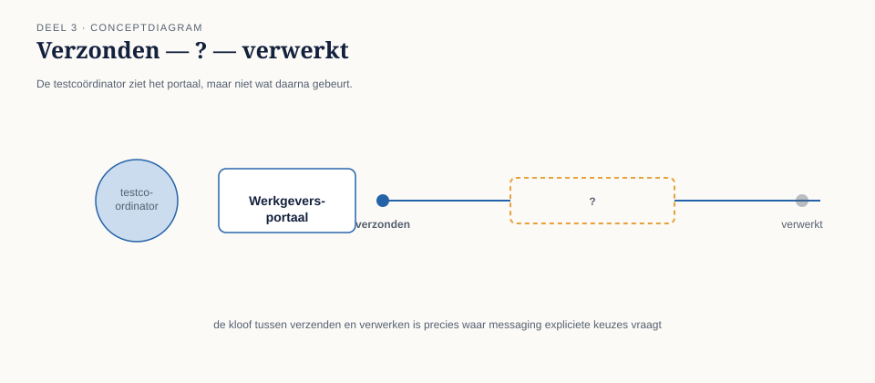
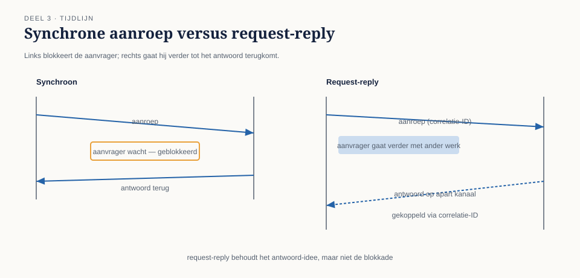
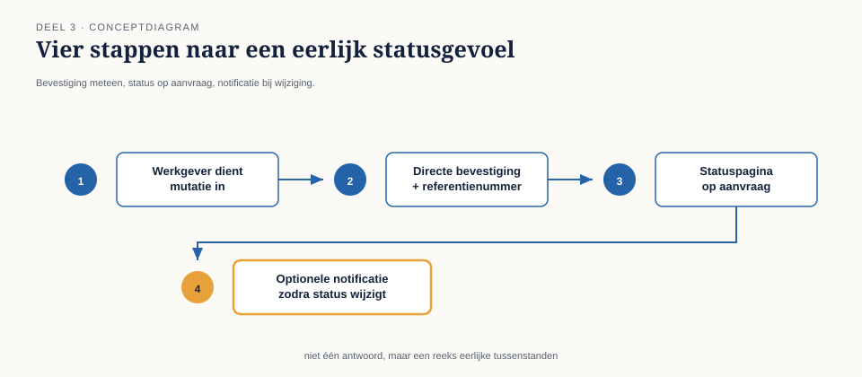

Cursus Enterprise Integration Patterns · Niveau 1 (Fundament) · Deel 3 van 30
Message Construction: command, event, document en request-reply
Het herziene ontwerp aan het eind van deel 2 loste de vermenging op — mutatiekanaal en mutatie-gebeurd-kanaal, keurig gescheiden. Maar toen Caspar het aan de testcoördinator van het Werkgeversportaal liet zien, kreeg hij een vraag terug die hij niet had zien aankomen:"Mooi, maar hoe laat ik straks in de interface aan de werkgever zien of zijn mutatie gelukt is? Ik kan toch niet drie kwartier lang 'wordt verwerkt' blijven tonen zonder ooit een update?"
8secties
3figuren
12controlevragen
1kernzinnen
Niveau 1: ① Van synchroon naar asynchroon: waarom messaging → ② Messagingfundamenten: kanaal, bericht, endpoint → ③ Message Construction: command, event, document en request-reply (hier) → ④ Basisrouting: content-based router en message filter → ⑤ Basistransformatie: translator, envelope wrapper, normalizer → ⑥ Point-to-point vs. publish-subscribe kanalen, verdiept → ⑦ Betrouwbaarheid I: garanties en idempotentie → ⑧ Betrouwbaarheid II: volgorde en guaranteed delivery → ⑨ Foutafhandeling basis: dead letter channel en invalid message channel → ⑩ Examentraining en capstone: de verdediging
3.0 De vraag die na het herziene ontwerp overbleef
Sectie 1 van 8
Het herziene ontwerp aan het eind van deel 2 loste de vermenging op — mutatiekanaal en mutatie-gebeurd-kanaal, keurig gescheiden. Maar toen Caspar het aan de testcoördinator van het Werkgeversportaal liet zien, kreeg hij een vraag terug die hij niet had zien aankomen: "Mooi, maar hoe laat ik straks in de interface aan de werkgever zien of zijn mutatie gelukt is? Ik kan toch niet drie kwartier lang 'wordt verwerkt' blijven tonen zonder ooit een update?"
Dat is geen implementatiedetail. Het is de vraag of het ontwerp uit deel 2 een compleet patroon vormt, of alleen de helft ervan. Een command message versturen is één ding; weten wat er met die opdracht gebeurd is, is een ander. Dit deel werkt drie dingen uit: hoe je de drie berichtstypen uit deel 2 concreet bouwt, hoe je met request-reply een antwoord terugkrijgt zonder terug te vallen op synchroon wachten, en waar de grens ligt tussen "nuttige asynchrone terugkoppeling" en "eigenlijk toch gewoon een blocking call, alleen trager".

Figuur 3-1 — de testcoördinator naast het scherm van het Werkgeversportaal, met een tijdlijn "verzonden — ? — verwerkt" waarbij het middelste stuk leeg is
02
3.1 Command messages opnieuw bekeken: wat erin moet
Sectie 2 van 8
Een command message is meer dan "een opdracht in JSON". Om bruikbaar te zijn voor de ontvanger, en om later terugkoppeling mogelijk te maken, moet een command message drie dingen bevatten die niet vanzelfsprekend zijn als je alleen aan de payload denkt:
Een unieke bericht-ID, los van eventuele fachliche identifiers zoals een deelnemersnummer. Deze ID is nodig voor idempotentie (deel 7) en voor logging — als hetzelfde command twee keer met exact dezelfde inhoud binnenkomt (door een retry, zie deel 7), moet de ontvanger kunnen vaststellen of dit een nieuw verzoek is of een dubbele aflevering van hetzelfde verzoek.
Een reply-to adres, als er een antwoord wordt verwacht. Dit is een header-veld dat aangeeft: als je klaar bent, stuur het resultaat naar dít kanaal, niet naar een kanaal dat de ontvanger zelf moet raden of hardcoderen.
Een correlation identifier, zoals geïntroduceerd in deel 2, zodat het antwoord (op het reply-to-kanaal) terug te koppelen is aan deze specifieke aanvraag.
Zonder deze drie is een command message een opdracht die de ontvanger wel kan uitvoeren, maar waarvan de resultaten nergens gestructureerd terugkomen — precies het gat dat de testcoördinator signaleerde.
Controlevraag — Opdracht 3.1 — Wat ontbreekt in dit command
Uit Werkboek deel 3, Opdracht 3.1 — Wat ontbreekt in dit command
Hieronder staat een command message zoals een junior ontwikkelaar hem voorstelde.
Welke drie velden ontbreken volgens paragraaf 3.1, en waarom is elk nodig?
Stel dat dit bericht door een netwerkstoring twee keer wordt afgeleverd. Wat merkt KERN daarvan met dit ontwerp, en wat zou er anders zijn met de aanvullingen uit a?
→Uitwerking tonenToon
a. Bericht-ID — zonder deze kan KERN niet vaststellen of een binnenkomend bericht een nieuw verzoek is of een dubbele aflevering van een eerder verzoek. Reply-to — zonder dit adres weet KERN niet waar het resultaat naartoe moet, en zou dat hardgecodeerd moeten worden, wat de ontkoppeling van deel 2 weer ongedaan maakt. Correlatie-ID — zonder deze kan het Werkgeversportaal het antwoord niet aan deze specifieke aanvraag koppelen zodra er meerdere tegelijk openstaan.
b. Zonder de aanvullingen verwerkt KERN het bericht gewoon twee keer — bij een adreswijziging is dat toevallig onschadelijk (het tweede keer hetzelfde adres invoeren verandert niets), maar bij bijvoorbeeld een saldomutatie zou dit een dubbele boeking betekenen. Met een bericht-ID kan KERN de tweede aflevering herkennen en negeren (idempotentie — verder uitgewerkt in deel 7).
Wat je hier moet meenemen: de payload beschrijft wát er moet gebeuren; bericht-ID, reply-to en correlatie-ID beschrijven hóe het bericht zich door de keten moet gedragen. Beide zijn nodig, en ze horen niet door elkaar in de payload maar in de header.
03
3.2 Het request-reply-patroon
Sectie 3 van 8
Request-reply is de asynchrone tegenhanger van een synchrone aanroep-met-antwoord: de aanvrager stuurt een command (of, minder gebruikelijk, een document) op een verzoekkanaal, en ontvangt het antwoord op een apart antwoordkanaal — zonder dat de aanvrager blokkeert in afwachting daarvan.
Dat laatste woord, "blokkeert", is het hele verschil met synchroon wachten. Het patroon bestaat uit drie samenwerkende onderdelen:
Het verzoekkanaal, waarover het command wordt verstuurd — dit is precies het mutatiekanaal uit deel 2.
Het antwoordkanaal, aangewezen via het reply-to-veld. Dit kan een gedeeld kanaal zijn waarop alle antwoorden binnenkomen (en waarbij de correlatie-ID bepaalt wie welk antwoord oppikt), of een kanaal per aanvrager. Beide varianten hebben een plek: een gedeeld antwoordkanaal is eenvoudiger te beheren, een kanaal per aanvrager is eenvoudiger te beveiligen. Bij Meridiaan is voor het Werkgeversportaal gekozen voor een gedeeld antwoordkanaal per applicatie, omdat het aantal werkgevers te groot is om per werkgever een kanaal te onderhouden.
De correlatie, die bepaalt welk binnenkomend antwoord bij welke nog openstaande aanvraag hoort — het mechanisme uit 2.4, nu in actie.
Kernzin 3 van de cursus: request-reply is geen synchrone aanroep in een jasje — de aanvrager gaat na verzending gewoon door, en verwerkt het antwoord wanneer het komt, niet wanneer hij ernaar staat te wachten.

Figuur 3-2 — twee tijdlijnen naast elkaar: links een synchrone aanroep (blokkerende pijl heen, wachten, pijl terug); rechts request-reply (pijl heen, aanvrager gaat verder met ander werk, later een binnenkomend antwoord op een apart kanaal, gekoppeld via correlatie-ID)
Controlevraag — Opdracht 3.2 — Blocking call in vermomming herkennen
Uit Werkboek deel 3, Opdracht 3.2 — Blocking call in vermomming herkennen
Een collega van Caspar presenteert dit ontwerp voor de statusopvraging: "Het portaal stuurt een command naar een statuskanaal, en blijft op een aparte thread luisteren op het antwoordkanaal totdat het antwoord er is — met een time-out van 30 seconden, net als bij de oude REST-aanroep, voor de zekerheid."
Is dit request-reply zoals bedoeld in 3.2, of de valkuil uit 3.3? Motiveer.
Wat zou je concreet veranderen aan dit ontwerp?
→Uitwerking tonenToon
a. Dit is de valkuil. Het gebruikt weliswaar twee kanalen en een correlatie-ID, maar de aanvrager blokkeert nog steeds — nu op een aparte thread in plaats van de hoofdthread, met precies dezelfde time-out-problematiek als de oorspronkelijke synchrone aanroep uit deel 1. De messaging-infrastructuur is toegevoegd, maar het architecturale probleem (signaal 1: onvoorspelbare verwerkingstijd van de onderliggende keten) is niet opgelost, alleen verplaatst naar een andere thread.
b. Laat het portaal na verzending gewoon doorgaan (geen blokkerende wachtthread). Verwerk het antwoordbericht wanneer het binnenkomt via een aparte handler die de lokale status bijwerkt. Toon de gebruiker meteen een ontvangstbevestiging, en laat de statuspagina de lokaal opgeslagen (en bijgewerkte) status tonen op aanvraag — geen wachttijd, geen time-out nodig, want "nog in behandeling" is een geldig en onmiddellijk antwoord.
Discussiepunt: waarom voelt "een aparte thread met time-out" voor veel ontwikkelaars als een oplossing? Omdat het de synchrone denkwijze behoudt terwijl het de code van messaging voorziet — precies het soort schijnoplossing waar deel 1 voor waarschuwde.
04
3.3 De valkuil: request-reply als vermomd blocking call
Sectie 4 van 8
De meest voorkomende beginnersfout bij dit patroon is het bouwen van precies het verkeerde ding: de aanvrager verstuurt het command, en blokkeert vervolgens synchroon totdat het antwoord op het antwoordkanaal verschijnt — inclusief een time-out, exact zoals bij de oorspronkelijke REST-aanroep uit deel 1.
Dit lost niets op. Het voegt alleen twee kanalen en een correlatie-ID toe aan een ontwerp dat in de kern nog steeds "wachten op antwoord" is, met alle nadelen van deel 1 (signaal 1: onvoorspelbare verwerkingstijd) intact, plus de extra complexiteit van messaging erbovenop.
Wanneer is blokkerend wachten op een reply dan wél verdedigbaar? Als, en alleen als, de aanvrager werkelijk niets anders te doen heeft totdat het antwoord er is — bijvoorbeeld een achtergrondproces dat na een reeks stappen expliciet op resultaat A moet wachten voordat stap B zinvol is, en waarbij het geen enkele consequentie heeft dat dit achtergrondproces een tijdje "stilstaat". Bij een interactieve gebruiker, zoals de werkgever in het portaal, is dat vrijwel nooit het geval.
Het juiste antwoord voor het Werkgeversportaal is daarom niet "blokkeer tot het antwoord er is", maar: toon direct een ontvangstbevestiging ("mutatie ontvangen, referentie MRD-2026-08341"), sla de correlatie-ID lokaal op, en werk de status bij zodra het antwoordbericht binnenkomt — via een los mechanisme dat de gebruiker ofwel actief informeert (notificatie, e-mail) ofwel laat opvragen (statuspagina). Dit laatste, het opvragen van status, is zelf weer een klein request-reply-patroon: "wat is de status van referentie MRD-2026-08341?" is een command met een eigen, onmiddellijk antwoord (want de status zélf, ook "nog in behandeling", is meteen beschikbaar — alleen de uitkomst van de oorspronkelijke mutatie niet).

Figuur 3-3 — schermflow: 1) werkgever dient mutatie in, 2) directe ontvangstbevestiging met referentienummer, 3) statuspagina die op aanvraag de actuele stand toont, 4) optionele notificatie zodra de status wijzigt
Controlevraag — Opdracht 3.3 — Command, event of document — nu met request-reply
Uit Werkboek deel 3, Opdracht 3.3 — Command, event of document — nu met request-reply
Bepaal voor elk bericht: is dit een command, event of document message, en zou je hier request-reply bij verwachten (dus een reply-to en correlatie-ID)?
"Genereer de jaaropgave voor deelnemer 00482 en stuur het resultaatbestand terug."
"Deelnemer 00482 heeft de jaaropgave gedownload."
"Hierbij het brondossier voor de jaaropgave-generator."
"Wat is de status van referentie MRD-2026-08341?"
→Uitwerking tonenToon
a. Command, mét request-reply — er wordt expliciet een resultaat teruggevraagd, dus reply-to en correlatie-ID zijn nodig.
b. Event, zonder request-reply — dit is een feit dat geïnteresseerde partijen (bijvoorbeeld statistiek, of een reminder-proces dat downloads bijhoudt) kunnen oppikken; er wordt geen antwoord verwacht.
c. Document, zonder request-reply — puur een gegevensoverdracht die nodig is voordat command a kan worden uitgevoerd. Merk op dat c logisch vóór a plaatsvindt in de keten.
d. Command, mét request-reply — dit is zelf een klein verzoek-antwoordpatroon: de statusvraag wordt gesteld en er wordt onmiddellijk (de status is immers al bekend) een antwoord verwacht.
Wat je hier moet meenemen: niet elk command hoeft request-reply te zijn (denk aan "verwerk deze mutatie" zonder dat de zender per se een expliciet resultaat terug wil) — de vraag is steeds: verwacht de zender een concreet antwoord waarop hij moet kunnen reageren, of is "het gebeurt, klaar" voldoende?
05
3.4 Document messages: wanneer geen opdracht en geen gebeurtenis volstaat
Sectie 5 van 8
Niet elk asynchroon bericht is een opdracht of een feit. Soms is de enige bedoeling het overdragen van gegevens, zonder dat de zender iets voorschrijft en zonder dat het een op-zichzelf-staande gebeurtenis is. Het klassieke voorbeeld bij Meridiaan is de jaaropgave: eenmaal per jaar wordt voor elke deelnemer een volledig dossier samengesteld en doorgezet naar de communicatieafdeling, die er een document van maakt.
Een document message onderscheidt zich van een event message door de afwezigheid van een "dit is gebeurd"-connotatie: het dossier zelf is geen gebeurtenis, het is gewoon informatie die op dit moment wordt overgedragen omdat er een taak (het genereren van de jaaropgave) om vraagt. Het onderscheidt zich van een command message doordat er niets wordt opgedragen — de ontvanger bepaalt zelf, of via zijn eigen proces, wat er met de gegevens gebeurt.
Deze nuance is voor de meeste ontwerpen minder kritisch dan het command/event-onderscheid uit deel 2 — verwar een document zelden met een event, want de praktische gevolgen zijn kleiner. Toch is het onderscheid nuttig om scherp te houden: een document message hoeft geen reply-to en geen verwachting van een antwoord te bevatten, wat het ontwerp van het bijbehorende endpoint eenvoudiger maakt dan bij een command.
Controlevraag — Opdracht 3.4 — Ontwerp de statusopvraging
Uit Werkboek deel 3, Opdracht 3.4 — Ontwerp de statusopvraging
Ontwerp, op basis van 3.3 in de reader, de volledige berichtenstroom voor het scenario: werkgever dient een mutatie in, krijgt direct een referentienummer, en kan op elk moment de status opvragen.
Teken (in tekst, geen figuur nodig) de kanalen, berichttypen en de rol van de correlatie-ID.
Portaal toont direct: "Ontvangen, referentie X." Geen wachten.
KERN verwerkt, plaatst antwoord op mutatie-antwoordkanaal: bevat correlatie-ID = X en het resultaat.
Portaal-endpoint ontvangt het antwoord asynchroon, werkt lokale status bij onder referentie X.
Werkgever vraagt op elk moment de status op: Portaal → statuskanaal (point-to-point): command "wat is status van X", correlatie-ID = Y (nieuw, want dit is een ander verzoek), reply-to = status-antwoordkanaal.
Status-endpoint antwoordt onmiddellijk (leest lokaal opgeslagen status), correlatie-ID = Y.
Wat je hier moet meenemen: er zijn twee afzonderlijke correlatie-ID's nodig (X voor de oorspronkelijke mutatie, Y voor elke statusvraag) — deelnemers maken hier vaak de fout om X te hergebruiken voor de statusvraag, wat werkt zolang er maar één statusvraag per mutatie is, maar breekt zodra de gebruiker twee keer ververst.
06
3.5 Terug naar de testcoördinator
Sectie 6 van 8
Met request-reply, correlatie en de drie berichtstypen op hun plaats, kon Caspar de vraag van de testcoördinator volledig beantwoorden:
Het Werkgeversportaal verstuurt een command message met bericht-ID, reply-to en correlatie-ID.
KERN verwerkt en stuurt een antwoordbericht (zelf ook een soort command, namelijk "toon dit resultaat", of eenvoudiger: als document beschouwd — de cursus behandelt dit verder niet als apart type om de terminologie niet nodeloos uit te breiden) terug op het aangewezen antwoordkanaal, met dezelfde correlatie-ID.
Ondertussen toont het portaal direct een ontvangstbevestiging, zonder te blokkeren.
Bij binnenkomst van het antwoord wordt de lokaal opgeslagen status bijgewerkt, zichtbaar via een statuspagina die de gebruiker zelf kan raadplegen — zelf ook een (razendsnel) request-reply-patroon.
Dit is het eerste volledig sluitende asynchrone ontwerp van de cursus. Het bevat nog geen routing, geen transformatie en geen foutafhandeling voor het geval KERN helemaal niet reageert — dat komt in de volgende delen.
Controlevraag — Opdracht 3.5 — Uit je eigen praktijk
Uit Werkboek deel 3, Opdracht 3.5 — Uit je eigen praktijk
Neem de koppeling uit opdracht 2.5. Ontwerp nu een volledig request-reply-patroon eromheen, inclusief de drie header-velden uit 3.1, en beschrijf hoe een gebruiker (of het opvolgende systeem) op de hoogte blijft zonder dat er ergens synchroon gewacht wordt.
→Uitwerking tonenToon
Er is geen modelantwoord; dit is een spiegelopdracht.
Veelvoorkomende valkuil uit eerdere groepen: deelnemers ontwerpen het verzoekkanaal en het antwoordkanaal correct, maar vergeten de directe ontvangstbevestiging — waardoor de eindgebruiker alsnog het gevoel heeft "in het luchtledige" te zenden totdat het echte antwoord er is. Bespreek dit expliciet als het optreedt: het technische patroon kan volledig correct zijn en toch een slechte gebruikerservaring opleveren als de bevestigingsstap wordt overgeslagen.
07
Samenvatting van deel 3
Sectie 7 van 8
Een bruikbaar command message bevat, naast de payload: een unieke bericht-ID, een reply-to-adres (indien een antwoord verwacht wordt), en een correlatie-ID.
Request-reply is de asynchrone tegenhanger van een aanroep-met-antwoord: verzoekkanaal, antwoordkanaal, en correlatie die ze verbindt.
De grootste valkuil is request-reply bouwen als vermomd blocking call — synchroon wachten op het antwoordkanaal lost niets op van wat deel 1 signaleerde.
Het juiste patroon voor een interactieve gebruiker: directe ontvangstbevestiging, asynchrone statusbijwerking, optioneel een tweede, razendsnelle request-reply voor statusopvraging.
Document messages dragen gegevens zonder opdracht en zonder gebeurtenis-connotatie; het onderscheid met event is minder kritisch dan command/event, maar wel nuttig voor een eenvoudiger endpoint-ontwerp.
Zelftoets deel 3
Uit Werkboek deel 3, Zelftoets (letterlijk overgenomen)
1Noem de drie header-velden die een command message bruikbaar maken voor terugkoppeling.Toon antwoord
Bericht-ID, reply-to-adres, correlatie-ID.
2Wat zijn de drie samenwerkende onderdelen van request-reply?Toon antwoord
Verzoekkanaal, antwoordkanaal, correlatie die ze verbindt.
3Wat is de kernzin van dit deel, in eigen woorden?Toon antwoord
Request-reply is geen synchrone aanroep in een jasje — de aanvrager gaat na verzending door en verwerkt het antwoord wanneer het komt.
4Beschrijf de valkuil van request-reply als vermomd blocking call, en hoe je hem herkent.Toon antwoord
De aanvrager blokkeert alsnog synchroon op het antwoordkanaal, vaak met dezelfde time-out-problematiek als de oorspronkelijke synchrone aanroep — messaging is toegevoegd, maar het architecturale probleem is niet opgelost.
5Wat is het juiste antwoord voor een interactieve gebruiker in plaats van blokkerend wachten?Toon antwoord
Directe ontvangstbevestiging tonen, correlatie-ID lokaal opslaan, status asynchroon bijwerken zodra het antwoord binnenkomt, eventueel met een aparte, snelle request-reply voor statusopvraging.
6Wat onderscheidt een document message van een event message?Toon antwoord
Een document message draagt gegevens zonder opdracht en zonder "dit is gebeurd"-connotatie; een event message meldt uitdrukkelijk dat er iets is gebeurd.
7Waarom heeft een statusopvraging een eigen, nieuwe correlatie-ID nodig, en niet die van de oorspronkelijke mutatie?Toon antwoord
Omdat een statusopvraging een ander, nieuw verzoek is dan de oorspronkelijke mutatie — hergebruik van dezelfde correlatie-ID werkt alleen zolang er precies één statusvraag per mutatie wordt gesteld en breekt zodra dat er meer worden.
08
Vooruitblik
Sectie 8 van 8
Deel 4 opent de eerste patroonfamilie: routing. Nu berichten goed geconstrueerd zijn, is de volgende vraag hoe een bericht zijn weg vindt naar de juiste ontvanger — te beginnen met de content-based router en de message filter.
Verder naar deel 4
Deel 4 — Basisrouting: content-based router en message filter — bouwt voort op wat hier is behandeld.